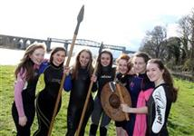

The Boyne Swim

Are you brave enough to Battle with the River Boyne??
We are delighted to announce that as part of The Irish Maritime Festival, the inaugural Boyne Swim will take place at 1.00p.m., on Saturday 14th June 2014.
Rising in the Bog of Allen, County Kildare, the historic River Boyne flows 113km northeast to enter the Irish Sea just below Drogheda at Mornington in County Meath.
The course for the inaugural Boyne Swim is 2.7 kilometres in length commencing in Mell, Drogheda and finishing South East of the famous Viaduct Bridge.
This event is open to Wetsuit & non-Wetsuited swimmers. As the swim is taking place in early summer, swimmers should note that the water temperature in the river can vary from 10 to 13 degrees Celsius. Weather conditions on the day may also have an impact on the water temperature, therefore swimmers are encouraged to wear a wetsuit, but those who are brave enough to wear togs are very welcome!
All participants will receive an Aura goody bag containing a swim hat, lapel pin and lots of goodies from our sponsors!
Online registration is now open, for further information please see : www.droghedatri.ie

Day :Saturday 14th June 2014
Start : Mell
Finish : De Lacy Bridge
Time: 1:00pm Saturday 14th June 2014
Registration required